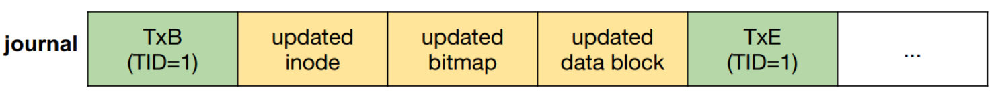

Crash consistency: fsck and journaling#
teaching: 0 exercises: 0 questions:
“How to update the disks despite crashes?” objectives:
“First learning objective. (FIXME)” keypoints:
“First key point. Brief Answer to questions. (FIXME)”
1. Persistence#
Data persists after the computer is powered off
This is a given due to disks’ physics
If the computer crashes during the file system read/write activities, how can we guarantee that data on disk are still consistent?
This is a more interesting problem for operating systems.
The crash-consistency problem
2. A crash scenario#
A 4KB file on disk, within a single data block
An additional 4KB is written to the file (one more data block added).
If everything went well:
3. If the computer crashed during write#
What are all the possible inconsistent states that the FS can be in after the crash?
Only one thing updated
Case 1: Just the
data blockis updated, but not thedata bitmapandinodeCase 2: Just the
inodeis updated, but but not thedata bitmapanddata blockCase 3: Just the
data bitmapis updated, but not theinodeanddata block
Only two things updated
Case 4:
inodeanddata bitmapupdated, but notdata blockCase 5:
inodeanddata blockupdated, but notdata bitmapCase 6:
data bitmapanddata blockupdated, but notinode
4. Case 1: only the data block is updated#
The data is on disk
Nobody ever knows, because inode and data bitmap are not updated
The file system itself is still consistent, it is just like nothing happened
No need to fix anything
5. Case 2: only the inode is updated#
inodehas data block pointer pointing to an unwritten data blockIf we trust the
inode, we will read garbage dataAlso there is inconsistency between
data bitmapand theinode:inodesays that thedata block #5is used, butdata bitmapsay it is not.if not fixed, could allocate
block #5again and overwrite its data by mistake
6. Case 3: only data bitmap is updated#
inodeis not pointingdata block #5, so no risk of reading garbage datadata bitmapsaysdata block #5is used, but in fact it is notdata block #5will never be used againThis is called a space leak.
7. Case 4: Only inode and data bitmap updated#
The file system will read garbage data from
block #5again.The file system doesn’t even realized anything wrong, because the inode and the data bitmap are consistent with each other.
8. Case 5: Only inode and data block updated#
The file system will NOT read garbage data.
Data bitmapandinodeare inconsistent between each other:inodesays that the data block #5 is used, butdata bitmapsay it is notif not fixed, could allocate
block #5again and overwrite its data by mistake
9. Case 6: Only data bitmap and data block updated#
Inconsistency between inode and data bitmap.
We know
data block #5is used, but will never know which file uses it
10. Problem!#
We wish file system updates were atomic, but they are not.
The there are many different problems that can occur if the computer crashes during a file system update.
Inconsistency in file system data structure
Reading garbage data
Space leak
We call them crash-consistency problems
11. Solution 1: FSCK (File System Check)#
ß
A UNIX tool that scans the whole disk, finds inconsistencies ands repair them.
It runs before the file system is mounted, e.g., when booting
when crash happens, let it be, and fix it later (when rebooting)
Typical checks performed
all blocks pointed to by
inodeor indirect block must be marked used inbitmapall used
inodesmust be in some directory entryinodereference count (link count) must matchno duplicate data pointers.
etc.
12. Limitation of FSCK#
A working FSCK requires very complicated and detailed knowledge of the file system, and is hard to be implemented correctly.
It only cares about the internal consistency of the file system, and does NOT really care about lost data (e.g., Case 1 and Case 4)
Bigger problem: it is too slow
with a large hard drive, it can easily take hours to finish FSCK
it’s just a bit irrational: scan the whole disk no matter how small an inconsistency needs to be fixed.
13. Solution 2: Journaling (write-ahead logging)#
Additional space in the on-disk data structure

14. Journaling: what to store?#
When updating the disk, before making the actual writes to disk, the FS first writes a little note about what it is about to do, to the journal (or log, at well known location on disk).
Failures become recoverable:
If crash happens during actual write (journal write completed), then we can look at the journal and replay the actual writes hence recover the data.
If crash happens even before journal write finishes, then it doesn’t matter since the actual write has NOT happened at all, nothing is inconsistent.
15. Journaling: the structure to be written to the journal/log#
Transaction:
starts with a
transaction begin(TxB) block, containing atransaction id(TID) followed by blocks with the exact content to be written.physical logging: putting exact physical content
logical logging: putting more compact logical representation
ends with a
transaction end(TxE) block, containing the TID.

16. Journaling: sequence of operations#
Journal write: write the transaction, including the TxB, all pending data and metadata updates, and the TxE, to the journal; wait for these writes to complete.
Checkpoint: actually write the pending data and metadata to to their final locations in the file system.
What can go wrong:
Crash can occur during journal writes.
When having a batch of writes, the disk may perform some disk scheduling, so the writes in the batch can happen in any order.
17. Journaling: a better sequence of operations#
Journal write: write the transaction, including the TxB, all pending data and metadata updates, NOT including the TxE, to the journal; wait for these writes to complete.
Journal commit: write the TxE block (a.k.a. transaction commit block); now tractions is said to be committed.
Checkpoint: actually write the pending data and metadata to to their final locations in the file system.
Hard disk guarantees atomic write of a 512-byte sector, the TxE block should fit in a 512-byte sector, so the commit is either fully completed or not completed at all.
18. Journaling: recover from a crash#
If crash happens before the transaction is committed to the journal/log simply skip the pending update.
If crashed happens during the checkpoint step:
When booting, scan the journal and lookup for committed transactions (much faster than fsck scanning the whole disk).
Replay these transactions.
After replay the file system is guaranteed to be consistent, then we can mount it and do other stuff.
This is also called redo logging.
19. Journaling: space requirement#
If we need to write something to journal for every single disk update, does the journal need to be huge?
Not really, after checkpoint the transaction in the journal is not useful anymore, so the space can be freed.
So there are indeed 4 steps:
journal write
journal commit
checkpoint
free
Typical data structure for the journal: circular log
20. Metadata Journaling#
Recovery is fast with journaling, but the normal operations are slower, because for every update we need to write to the journal first then do the update.
Writing time is at least doubled, even worse if journal writing breaks sequential writes and cause jump-back-and-forth between journal and data region.
Metadata journaling is just like data journaling (what we just described), except that we only write metadata (NOT data) to the journal.
The journal looks like …
21. Metadata journaling#
If we write data after checkpointing metadata, then write data, if crash occurs before all data is written, the
inodeswill point to garbage data.How to solve this problem: Write data before writing metadata journal!
write data, wait until it completes
metadata journal write
metadata journal commit
checkpoint metadata
free
If write data fails, then no metadata is written at all, like nothing happened.
If data write succeed, but metadata write fails, still like nothing happened.
If metadata write succeeds, data must be available.
22. Journaling summary#
Journaling provides file system consistency
Time complexity of recovery is
O(size_of_journal), instead ofO(size_of_disk_volume)in fsck.Widely adopted by most modern file systems, including Linux’s Ext3, Ext4, ReiserFS, IBM’s JFS, SGI’s XFS, and Windows’ NTFS.
Metadata journaling is the most commonly used, since it reduces the amount of traffic to the journal while provide reasonable consistency guarantees.